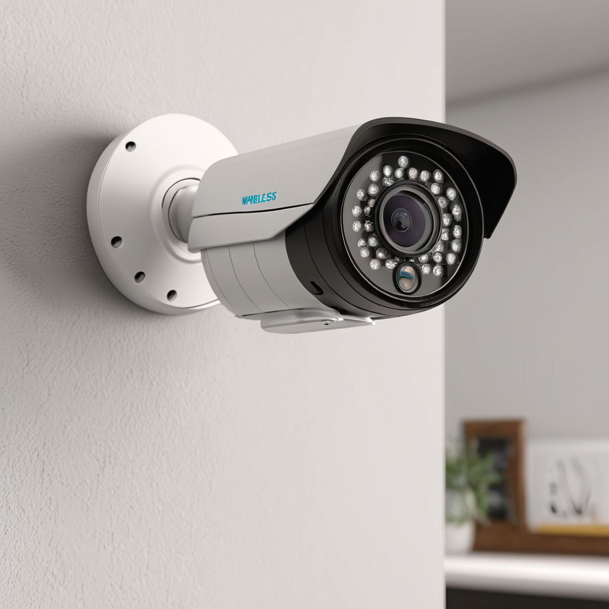
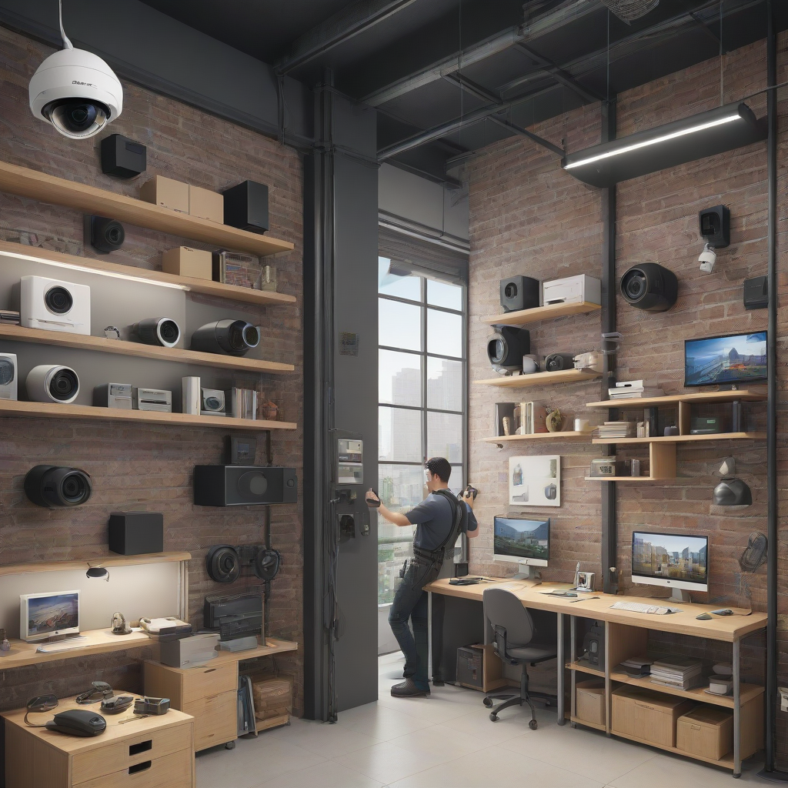
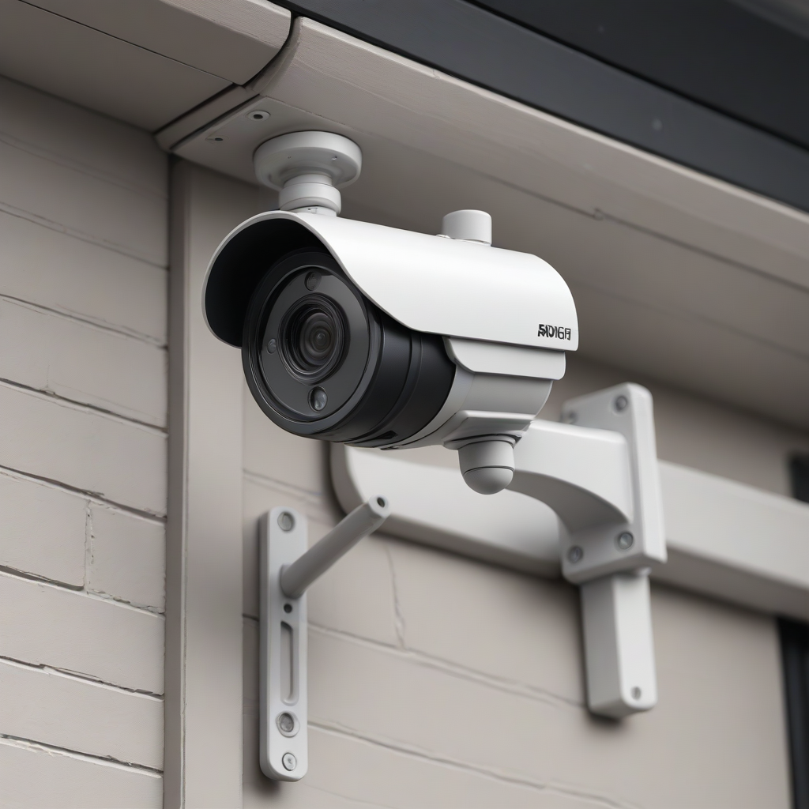

For a successful wireless security camera installation in 2026, start by auditing your WiFi coverage and identifying key entry points. Select battery-powered or hardwired WiFi units based on power access, and utilize no drill security camera install methods like adhesive mounts if you are renting. Always prioritize strong encryption and local storage options to ensure data privacy during your DIY home security camera setup.
Home safety has evolved significantly over the last decade. What once required expensive monitoring contracts and hardwired systems now sits within the reach of almost every homeowner and renter. The rise of smart home technology means you can monitor your property from anywhere in the world using just a smartphone. However, the flexibility of wireless systems comes with specific technical requirements that, if ignored, can lead to blind spots, connectivity drops, or compromised footage.
Understanding the nuances of wireless security camera installation is not just about plugging in a device; it is about creating a layered defense system. Whether you are protecting a multi-story family home or securing a single apartment unit, the placement and configuration of your cameras dictate their effectiveness. In this comprehensive guide, we will walk you through the 2026 landscape of security hardware, helping you avoid common pitfalls and ensure your investment actually works when you need it most.
Our goal is to provide a practical, safety-focused roadmap. We will cover everything from assessing your network range to choosing the right mounting hardware. By the end of this article, you will have the confidence to execute a professional-grade DIY home security camera setup without needing to hire an expensive technician.
Why Choose Wireless for Your Home Security System

Before diving into the mechanics of installation, it is crucial to understand why wireless options have become the standard for modern home security. Traditional analog systems required running bulky coaxial cables through walls and ceilings, often necessitating drywall cuts and significant disruption to the property. Wireless systems have eliminated this barrier, democratizing security for renters and homeowners alike.
The primary advantage of wireless technology is scalability. If you need to add a camera to the garage next month, or one to the backyard in two years, you do not need to rewire the house. You simply plug in or charge the new unit and configure it via the app. This flexibility is particularly beneficial for best wireless security cameras for renters who cannot leave permanent damage or holes in the walls.
Furthermore, modern wireless cameras offer advanced features that wired systems often lack, such as two-way audio, intelligent motion detection, and integration with smart home ecosystems like Apple HomeKit or Google Home. However, this convenience comes with trade-offs. Wireless cameras rely heavily on your home network. If your WiFi sig

Planning Your Wireless Security Camera Installation
Successful security begins with a plan. Before purchasing a single device, you must audit your property to understand where coverage is needed and where technical limitations exist. A haphazard approach often leads to cameras that record trees or the ground rather than entry points. To ensure your wireless security camera installation is effective, follow these planning steps.
Auditing Your WiFi Coverage
The backbone of any wireless camera system is the internet connection. Most cameras require a stable 2.4GHz or 5GHz WiFi signal. While 5GHz offers faster speeds, 2.4GHz typically has better range and penetrates walls more effectively. Use a WiFi analyzer app on your phone to walk around the exterior of your home. Look for signal strength readings (RSSI). Anything below -70 dBm may result in intermittent connectivity.
If you notice dead zones where you intend to mount a camera, you may need to invest in a WiFi extender or a mesh network system before purchasing cameras. Without adequate signal strength, even the most expensive camera will fail to upload footage when an event occurs.
Identifying Critical Entry Points
Not all areas of your home require equal attention. Focus your budget and placement on high-traffic areas where intruders are most likely to attempt entry. These typically include:
- The front door and porch area.
- The back door and patio access.
- Garage entry points and windows.
- Side yards that provide cover for approaching the house.
Avoid placing cameras where they can be easily tampered with or knocked down. High mounting positions are generally more secure. Additionally, consider the lighting conditions. Cameras without night vision capabilities will be useless in dark areas, so ensure your chosen models have infrared (IR) or color night vision features.
Power Source Assessment
While "wireless" refers to the data connection, power is still a factor. You must decide between battery-powered units and hardwired WiFi cameras. Battery cameras offer the ultimate freedom for no drill security camera install options but require regular charging. Hardwired WiFi cameras provide continuous power and recording but require access to an electrical outlet near the mounting location. Map out where outlets are available relative to your desired mounting spots.
Choosing the Right Hardware for 2026
The market is flooded with options, making the selection process daunting. To simplify this, we have categorized the top contenders based on user needs. The following comparison highlights key features you should look for when selecting your equipment.
| Product Model | Power Source | Resolution | Storage Option | Estimated Price | Best For |
|---|---|---|---|---|---|
| Arlo Pro 6 | Battery / Solar | 2K HDR | Cloud / SD | $199 | High-end renters |
| Ring Stick Up Cam | Plug-in / Battery | 1080p | Cloud | $99 | Budget DIY setup |
| Blink Outdoor 4 | Battery | 1080p | Cloud / Sync Module | $89 | Long battery life |
| Eufy SoloCam S340 | Battery | 2K | Local Storage | $149 | Privacy focused |
| Reolink Argus 4 Pro | Hybrid (Solar/Wired) | 4K | Local / Cloud | $129 | High detail footage |
When evaluating these options, consider your specific privacy needs. Some brands store footage on local SD cards, reducing monthly subscription costs, while others rely entirely on cloud subscriptions. For a DIY home security camera setup, local storage is often preferred for cost savings, but cloud storage offers redundancy if the camera is destroyed or stolen.
Also, look for "Matter" compatibility. In 2026, Matter-enabled devices offer better interoperability between different smart home ecosystems. If you already use a specific hub, choosing a Matter-compatible camera can streamline your automation routines without needing multiple apps on your phone.
Step-by-Step DIY Home Security Camera Setup
Once you have selected your hardware, the physical installation process can be straightforward if you follow a logical sequence. Rushing through this phase often leads to loose mounts or poor signal alignment. Here is the safe and effective procedure for installing your cameras.
Gathering Your Tools
Before you climb a ladder, ensure you have everything you need. This prevents dangerous situations where you might need to climb down to fetch a screwdriver. Your toolkit should include:
- A stable ladder (preferably with a spotter).
- A power drill with appropriate bits.
- Screwdrivers (Phillips and flathead).
- A smartphone with the camera app installed.
- Measuring tape and a level.
- Zip ties or cable management clips.
Powering On and Initial Configuration
Do not mount the camera immediately. Instead, set it up on a table indoors where you have strong WiFi access. Scan the QR code on the device using the manufacturer's app. Follow the prompts to connect the camera to your WiFi network. This allows you to test the video feed and motion detection sensitivity before mounting.
During this phase, update the firmware. Manufacturers frequently release security patches. Running outdated firmware can expose your camera to vulnerabilities, compromising your home network security. Always ensure the camera is on the latest software version before permanent installation.
Mounting and Positioning
Once configured, you can move to the mounting location. Use your measuring tape to mark the drill holes. Ensure the camera is level; a tilted camera can distort facial recognition and cover less useful ground. If you are drilling into siding, be careful not to hit underlying electrical wiring. Use a stud finder and a wire detector before drilling.
For hardwired cameras, use cable management clips to secure the power cord against the wall. Loose wires are unsightly and can be easily cut to disable the security system. Run the wire through the back of the camera mount and secure it tightly.
Security Camera Mounting Locations
Placement is everything. A camera recording the sky is of no value to law enforcement or your peace of mind. When determining security camera mounting locations, consider the angle of view and lighting.
Front Door and Porch
The front door is the most common entry point for visitors and potential intruders. Mount the camera high enough to look down on the porch, ideally 7 to 9 feet off the ground. This height makes it difficult for a person to reach and tamper with the lens. Ensure the field of view captures the door handle and the path leading to the door.
Garage and Side Entry
Garages are often less secure than the main house and provide access to the interior. Place a camera inside the garage pointing at the door, or outside pointing at the garage door opener. This monitors tools and vehicles while preventing unauthorized entry.
Backyard and Perimeter
For large backyards, wide-angle cameras are essential. However, avoid pointing cameras directly at the sun during sunrise or sunset, as this can cause glare and blind the sensor. Position cameras so that the sun is behind them or to the side. If monitoring a perimeter fence, ensure the camera is angled to capture faces rather than backs of heads.
Solving Common WiFi and Range Issues
One of the most frequent complaints regarding wireless security camera installation is connectivity loss. Understanding the limitations of your wireless camera wifi range helps mitigate these issues.
The 2.4GHz vs. 5GHz Debate
Most security cameras operate on the 2.4GHz band because it travels through walls better than 5GHz. While 5GHz is faster, it has a shorter range. If your camera is located far from the router, force it to connect to the 2.4GHz network. Many routers have a combined SSID, but you may need to log into your router settings to separate the bands if the camera cannot connect.
Using Extenders and Mesh Systems
If your outdoor area is too far from the router, a simple WiFi extender can bridge the gap. Mesh systems like Eero or Google Nest WiFi are even better, as they create a seamless network throughout the home. Place a mesh node in a window near the exterior wall where the camera will be mounted to boost the signal strength.
Interference Management
Other electronics can interfere with WiFi signals. Microwaves, baby monitors, and cordless phones often operate on the 2.4GHz frequency. If you experience dropouts, try changing the WiFi channel on your router to a less congested one. Channels 1, 6, and 11 are typically the best for 2.4GHz networks.
No Drill Security Camera Install Options
For renters or those who cannot damage their siding, no drill security camera install methods are a viable and effective alternative. These methods rely on strong adhesives or magnetic mounts.
Adhesive Mounts
Many modern cameras come with 3M adhesive pads designed for outdoor use. To ensure they stick properly, clean the surface with isopropyl alcohol and let it dry completely. Apply the mount and press firmly for 30 seconds. Wait 24 hours before hanging the camera to allow the adhesive to cure fully. These mounts are suitable for smooth surfaces like brick, vinyl siding, or wood.
Magnetic Mounts
Some cameras feature a magnetic base that snaps onto a metal plate. This allows for easy removal if you need to move the camera or leave the property. Ensure the magnetic plate is securely attached, either with screws (if permitted) or strong industrial adhesive. This option is excellent for temporary security setups.
Freestanding Tripods
For temporary needs or interior use, a small tripod can hold a camera in a window or on a shelf. This provides flexibility to adjust the angle without any permanent installation. However, ensure the tripod is weighted down so it cannot be easily knocked over.
Frequently Asked Questions
FAQ
Do I need a subscription for wireless security cameras?
Not necessarily. Many cameras offer basic local storage via a microSD card without any monthly fee. However, subscriptions usually unlock features like cloud video history, person detection, and integration with emergency services. For budget-conscious users, local storage is the most cost-effective choice for long-term use.
How long do battery cameras last on a single charge?
Battery life varies based on usage. A camera with motion detection might last 6 months to a year, while one set to continuous recording will drain in a few weeks. Solar panels can extend this indefinitely. Always check the manufacturer's estimated battery life under average conditions before purchasing.
Can I be hacked through my security camera?
Risk exists with any internet-connected device. To prevent hacking, always change the default password, enable two-factor authentication, and keep the firmware updated. Using a separate guest network for your IoT devices adds an extra layer of security for your main home network.
What is the best way to hide security camera wires?
Use cable clips that match the color of your siding. For indoor cameras, run wires behind baseboards or trim. For hardwired outdoor units, use conduit pipes if the aesthetic of exposed wiring is a concern. Proper cable management also protects the wires from weather and pests.
Will these cameras work if the internet goes down?
Most wireless cameras require internet to send alerts or stream video to your phone. However, if they have local SD card storage, they will continue recording motion events locally. You will just not have remote access or live viewing until the connection is restored.
Is it legal to record audio on security cameras?
Laws vary by state and country. Some regions require two-party consent for audio recording. Video-only recording is generally legal on private property. Always check your local laws and consider disabling audio recording if you are unsure to avoid legal complications.
Conclusion
Implementing a wireless security camera installation is one of the most effective steps you can take to protect your home and family in 2026. By planning your network coverage, selecting the right hardware for your property type, and following safety protocols during installation, you create a reliable deterrent against crime. Whether you choose a no drill security camera install for your rental or a hardwired solution for your primary residence, the key is consistency and maintenance.
Remember, technology is only as good as the person using it. Regularly check your camera feeds, clean the lenses, and update your passwords. If you are unsure about any electrical work, consult with a professional. For more guides on securing your digital life, check out our Best Home Security Systems or our deep dive into Smart Home Automation.
Take action today. Assess your home's vulnerabilities, choose your cameras, and start your DIY home security camera setup. Peace of mind is worth the investment.